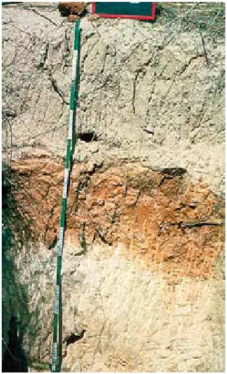

Chapter 2 · Terroir
III. The Soil
Soil is neither a more nor less well-founded conceptual term that that of terroir, but it is a natural body and is scientifically described by soil science (pedology), which studies soil in scientific and technical terms, paying particular attention to its composition, formation, development and geographical distribution. Studies to determine soil parameters and their influence on wine quality undoubtedly forms a basis for promising perspectives. A traditional understanding of soil considers it as the result of interactions between climate and soil organisms as factors acting on passive properties such as rocks and relief in a given period. The direct link to the concept of terroir is obvious in this sense.
When discussing soil, it is normal to refer to the layer covering the lithosphere, which interacts with the atmos-
phere, the hydrosphere and the biosphere, and thus to speak of the soil sphere as a natural link between the organic and inorganic realms. Soil is the basis of life for plants, their nutrient store, water reservoir and regulator

of climatic influences (such as temperature and precipitation) on the plants themselves. It is also the basis for most human activities, including all forestry and agricultural use in general and viticulture in particular.
Soil is described in terms of its profile. The term profile would be coined in geology and later adopted by soil science. Farmers, gardeners and even some experts consider the soil as a superficial entity and only pay attention to the upper layer of a few centimetres. The soil scientist, on the other hand, sees three-dimensionally thanks to the soil profile and is also interested in its occurrence in the landscape and the interrelationships between the different soils.
Many properties can be looked at when examining the soil. The following section explains those with the greatest influence on the vineyard and wine quality:
• A soil profile is a section or vertical cut in a specially dug pit. This represents the soil with all the layers as they were formed and changed in the course of soil formation. These layers run parallel to the surface of the land and are called horizons. Each one differs in physical, chemical, mineralogical and biological structure. It must therefore be emphasised that the profile is characterised by its horizons and that the horizons are characterised by their properties. Therefore, it is not correct (although common, which is why we do it this way here) to speak of properties of the "soil", because one and the same soil has different grain size compositions or different contents of, for example, organic matter.
• It is common to find in the literature that the vine seeks loose and deep soils and stony rather than clayey ones; however, the casuistry of such statements is enormous and therefore more detail must be given. The grain size distribution (stone content and fine material) is related to very heterogeneous influencing variables and components of the soil, such as its physical, chemical and physio-chemical properties, vegetation-adverse conditions (toxicity, plant-adverse composition), temperature and water balance.
• The stone component (soil skeleton – the >2 mm
fraction) is of great importance for the soil climate, as it contributes to reducing surface water runoff and soil erosion and increasing infiltration. Rocks can also prevent capillary rise and influence the water and temperature balance, depending on the rock composition. For example, limestone can store water, while silicate rock has a low specific
The depth of the root system of the vine often does not exceed 1.20 m. As long as the soil conditions allow, one can observe a clear root development below a depth of one metre, which ensures good utilisation of the soil, both in terms of nutrients and water supply.
• Soil climate. The climatic components with their effects on the soil (and vice versa) as well as their interactions with regard to the plant ultimately determine the quality of the wine. Climatic changes in the soil usually have a medium- or long-term effect on the pH value through transformation and leaching processes and by the formation of organic material. As already mentioned above, the temperature regime of the soil is significantly different from that of the atmosphere, which means that root growth begins before the growth of the above-ground parts of the plant and also ends later.
• Soil temperature is influenced by various factors, such as colour, the specific heat of the materials of which it is composed (water, organic matter and the cover of plant residues, vegetation and stones) and topography. Regarding the relation of colour and temperature, it can be assumed that vines growing on dark soils (lowlands, depressions) develop better, and exhibit stronger growth and a darker colouring of the foliage with warmer tones. In addition, they show a lower risk of burns, reduction of sootiness and are less susceptible to premature termination of growth due to temperature rise.
• Soil moisture has to be understood as the result of a balance of supply (rain, precipitation, high waterlogging, irrigation) and loss (surface water runoff, evapotranspiration, drainage). This is crucial in the Iberian Peninsula given heat coefficient. In terms of viticulture, stony soils are generally advantageous in terms of quality, but disadvantageous in terms of the plant's vigour, its fertility and therefore yield.
• Fine soils (grain size less than
2 mm) such as loose, sandy, welldrained soils, but where drought does not become a limiting factor, are preferred by the vine. The uniformity of the soil profile is considered important, but there is no clear indication of threshold values in terms of clay content, depth, horizon thickness, etc., in relation to grain size distribution).
In regions with predominantly sandy soils, the relatively low clay content creates considerable management problems due to low soil fertility and water storage capacity, with corresponding risks for quality wine production. the lack of rain during the key months of the vegetative cycle. A balanced water balance is an important tool in the hands of the winegrower. The water balance can also provide important parameters for the zoning method (see below):
• The colloid system represents a central point for soil fertility. It is composed of organic (organic matter, humus) and mineral colloids (clays). Humus-rich soils have a reputation for producing plump wines. Nevertheless, humus by itself does not seem to have a detrimental effect on wine quality, especially in clayey soils. Soils high in organic matter enhance the colour intensity and tannin richness of the must, but can lead to higher yields. The mineral colloid system is closely related to soil fertility and availability of nutrients, which in turn affect not only soil balance but also yield and quality.
• The importance of the pH value of the soil and its influence on the quality of the wine should not be underestimated. Note that the pH value o is not in itself a measure of the health of the soil, nor of the nutritional balance of the plant, nor of the quality of the grape, must and wine.
• The fertility of the soil is a complex phenomenon that is related to external factors (climate, location, plant) as well as to the physical, chemical and physicochemical properties of the soil and the presence or absence of certain nutrients. Some experts claim that the quality of wine is inversely proportionate to soil productivity. Depending on one's point of view, one can classify this claim as true or false. In this respect, it is considered viticultural dogma that good wines are produced on poor soils rich in lime. Ultimately, one can take the right or wrong vine cultivation measures on both fertile and poor soils, which leads to good or poor quality, and high or low yield. Despite the presence of certain nutrients, the nutrient balance can be disturbed if even one nutrient is lacking. One element in insufficient measure is enough for the soil to behave as nutrient-poor overall.
Soil fertility can be considered acceptable if cation values are within the following ranges: Calcium 10-20 cmol(+)/kg, Magnesium 2.5-5.0 cmol(+)/kg, Potassium 0.6-1.2 cmol(+)/ kg. Regarding ratios in respect of the cation exchange capacity, the following is considered desirable: exchangeable calcium 40-70%, magnesium 10-20%, potassium 2-12%; the proportion of sodium, which indicates the alkalinity of the soils, should be between 0.5 and 3% (never above 10%). Two ratios are usually used to assess antagonism in the vine: the ratio of calcium to magnesium should be 5, and potassium to magnesium between 0.5 and 1.
• Soil mapping. The comprehensive investigation of soils is usually referred to as a soil survey or, if in a more precise and detailed form, as a soil resources inventory (SRI). The delineation of different soil map units (SMUs) units is done in direct form for the precise determination of geomorphological criteria (mainly relief, rock, drainage). The distinction between soil maps will be the subject of the following paragraph.
Two major schools coexist to determine the soil structure: one called "American" and next to it that of the FAO. Both are constantly being revised and expanded. It is very important that the classification is detailed enough for two reasons: firstly, because the plant itself is able to distinguish small differences and thus one terroir from another; secondly, because applied management, traditional viticulture, and especially "precision viticulture" demand it. In detail, it shows the most characteristic soil profiles of traditional viticulture, based on the use of only three properties important for viticulture (organic matter, clay content, and calcium carbonate equivalents):
• Entisols (Psamment,Fluent),
• Inceptisols (Combixerept, Calcixerept),
• Alfisols (Haploxeralfs, typic and calcic),
• Andisols,
• Vertisols,
• Aridisols (Cambids, Calcids, Argids),
• and Ultisols (Xerults).